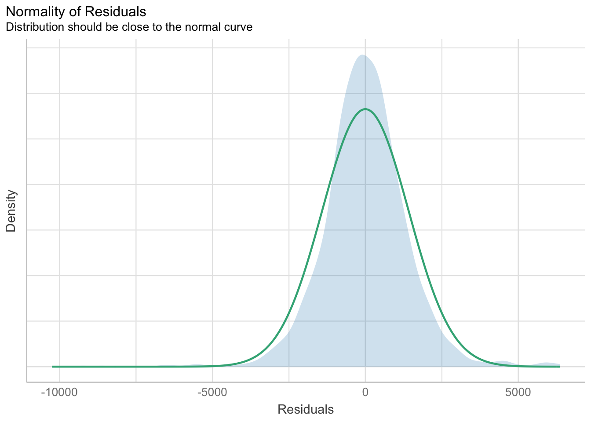

pacman::p_load(ggstatsplot, tidyverse,rstantools)Hands-on Exercise 4
Getting started
- Using p_load() of pacman package to load the required libraries
- Importing data
exam_data <- read_csv("data/Exam_data.csv")Plotting the graph
1) Visual Statistical Analysis
1.1) One-sample test: gghistostats() method
In the below output, gghistostats() is used to to build an visual of one-sample test on English scores.
Output:
set.seed(1234)
gghistostats(
data = exam_data,
x = ENGLISH,
type = "bayes",
test.value = 60,
xlab = "English scores"
)Default information: - statistical details - Bayes Factor - sample sizes - distribution summary
A Bayes factor is the ratio of the likelihood of one particular hypothesis to the likelihood of another. It can be interpreted as a measure of the strength of evidence in favor of one theory among two competing theories.
1.2) Two-sample mean test: ggbetweenstats()
In the below output, ggbetweenstats() is used to to build an visual of two-sample mean test.
Output:
ggbetweenstats(
data = exam_data,
x = GENDER,
y = MATHS,
type = "np",
messages = FALSE
)Default information: - statistical details - Bayes Factor - sample sizes - distribution summary
1.3) One-way ANOVA Test: ggbetweenstats() method
In the below output, ggbetweenstats() is used to to build an visual of one-way ANOVA test.
Output:
ggbetweenstats(
data = exam_data,
x = RACE,
y = ENGLISH,
type = "p",
mean.ci = TRUE,
pairwise.comparisons = TRUE,
#"ns" for only non-significant, "s" for only significant, "all" for everything
pairwise.display = "s",
p.adjust.method = "fdr",
messages = FALSE
)“ns” → only non-significant
“s” → only significant
“all” → everything
1.4) Significant Test of Correlation: ggscatterstats()
In the below output, ggscatterstats() is used to to build a visual for Significant Test of Correlation between Maths scores and English scores.
Output:
ggscatterstats(
data = exam_data,
x = MATHS,
y = ENGLISH,
marginal = FALSE,
)
1.5) Significant Test of Association (Depedence) : ggbarstats() methods
In the below output, ggbarstats() is used to to build a visual for Significant Test of Association (Dependence).
In the code chunk below, the Maths scores is binned into a 4-class variable by using cut().
Output:
exam1 <- exam_data |>
mutate(MATHS_bins =
cut(MATHS,
breaks = c(0, 60, 75, 85, 100)))In this code chunk below, ggbarstats() is used to build a visual for Significant Test of Association.
ggbarstats(
data = exam1,
x = MATHS_bins,
y = GENDER
)
2) Visualising Models
2.1) Getting Started
- Using p_load() of pacman package to load the required libraries
pacman::p_load(readxl, performance, parameters, see)- Importing data
car_resale <- read_xls("data/ToyotaCorolla.xls",
"data")
car_resale# A tibble: 1,436 × 38
Id Model Price Age_08_04 Mfg_Month Mfg_Year KM Quarterly_Tax Weight
<dbl> <chr> <dbl> <dbl> <dbl> <dbl> <dbl> <dbl> <dbl>
1 81 TOYOTA … 18950 25 8 2002 20019 100 1180
2 1 TOYOTA … 13500 23 10 2002 46986 210 1165
3 2 TOYOTA … 13750 23 10 2002 72937 210 1165
4 3 TOYOTA… 13950 24 9 2002 41711 210 1165
5 4 TOYOTA … 14950 26 7 2002 48000 210 1165
6 5 TOYOTA … 13750 30 3 2002 38500 210 1170
7 6 TOYOTA … 12950 32 1 2002 61000 210 1170
8 7 TOYOTA… 16900 27 6 2002 94612 210 1245
9 8 TOYOTA … 18600 30 3 2002 75889 210 1245
10 44 TOYOTA … 16950 27 6 2002 110404 234 1255
# ℹ 1,426 more rows
# ℹ 29 more variables: Guarantee_Period <dbl>, HP_Bin <chr>, CC_bin <chr>,
# Doors <dbl>, Gears <dbl>, Cylinders <dbl>, Fuel_Type <chr>, Color <chr>,
# Met_Color <dbl>, Automatic <dbl>, Mfr_Guarantee <dbl>,
# BOVAG_Guarantee <dbl>, ABS <dbl>, Airbag_1 <dbl>, Airbag_2 <dbl>,
# Airco <dbl>, Automatic_airco <dbl>, Boardcomputer <dbl>, CD_Player <dbl>,
# Central_Lock <dbl>, Powered_Windows <dbl>, Power_Steering <dbl>, …Note: car_resale is a tibble data frame.
2.2) Multiple Regression Model using lm()
In the below output, lm() is used to calibrate a multiple linear regression model of Base Stats of R.
Output:
model <- lm(Price ~ Age_08_04 + Mfg_Year + KM +
Weight + Guarantee_Period, data = car_resale)
model
Call:
lm(formula = Price ~ Age_08_04 + Mfg_Year + KM + Weight + Guarantee_Period,
data = car_resale)
Coefficients:
(Intercept) Age_08_04 Mfg_Year KM
-2.637e+06 -1.409e+01 1.315e+03 -2.323e-02
Weight Guarantee_Period
1.903e+01 2.770e+01 2.3) Model Diagnostic: Checking for multicolinearity using check_collinearity()
In the below output, check_collinearity() is used to check for multicolinearity.
Output:
check_collinearity(model)# Check for Multicollinearity
Low Correlation
Term VIF VIF 95% CI Increased SE Tolerance Tolerance 95% CI
KM 1.46 [ 1.37, 1.57] 1.21 0.68 [0.64, 0.73]
Weight 1.41 [ 1.32, 1.51] 1.19 0.71 [0.66, 0.76]
Guarantee_Period 1.04 [ 1.01, 1.17] 1.02 0.97 [0.86, 0.99]
High Correlation
Term VIF VIF 95% CI Increased SE Tolerance Tolerance 95% CI
Age_08_04 31.07 [28.08, 34.38] 5.57 0.03 [0.03, 0.04]
Mfg_Year 31.16 [28.16, 34.48] 5.58 0.03 [0.03, 0.04]check_c <- check_collinearity(model)
plot(check_c)
As per figure above, Age_08_04 and Mfg_Year are highly correlated.
Remove/Drop Mfg_Year.
2.3) Model Diagnostic: Checking for normality assumption using check_normality()
In the below output, check_normality() is used to check for normality assumption. #### Output:
model1 <- lm(Price ~ Age_08_04 + KM +
Weight + Guarantee_Period, data = car_resale)check_n <- check_normality(model1)plot(check_n)
Based on the figure above, we will reject the Null hypothesis and infer that the model failed to conform to normaility assumption.
2.4) Model Diagnostic: Checking model for homogeneity of variances using check_heteroscedasticity()
In the below output, check_heteroscedasticity() is used to check model for homogeneity of variances.
Output:
check_h <- check_heteroscedasticity(model1)plot(check_h)2.5) Model Diagnostic: Complete check using check_model()
In the below output, check_model() is used.
Output:
check_model(model1)2.6) Visualising Regression Parameters
In the below output, plot() of see package and parameters() of parameters package are used to visualize the parameters of a regression model.
Output:
plot(parameters(model1))
In the below output, ggcoefstats() of ggstatsplot package is used to visualize the parameters of a regression model.
Output:
ggcoefstats(model1,
output = "plot")
3) Visualising Uncertainty
3.1) Getting Started
- Using p_load() of pacman package to load the required libraries
pacman::p_load(tidyverse, plotly, crosstalk, DT, ggdist, gganimate)- Importing data
exam <- read_csv("data/Exam_data.csv")3.2) Visualizing the uncertainty of point estimates of using ggplot2
In the below output, ggplot2 is used.
It performs group by RACE and compute by calculating the observation, mean, standard deviation, and standard error of MATHS score by RACE. Then, it saves the output as a tibble data table called my_sum.
Output:
my_sum <- exam_data |>
group_by(RACE) |>
summarize(
n = n(),
mean = mean(MATHS),
sd = sd(MATHS)) |>
mutate(se = sd/sqrt(n-1))
my_sum$RACE <- fct_reorder(my_sum$RACE, my_sum$mean, .desc = TRUE)Next, the code chunk below will be shown in html format.
knitr::kable(head(my_sum), format = 'html')| RACE | n | mean | sd | se |
|---|---|---|---|---|
| Chinese | 193 | 76.50777 | 15.69040 | 1.132357 |
| Indian | 12 | 60.66667 | 23.35237 | 7.041005 |
| Malay | 108 | 57.44444 | 21.13478 | 2.043177 |
| Others | 9 | 69.66667 | 10.72381 | 3.791438 |
3.2.1 ) Reveal the standard error of mean Maths score by race
ggplot(my_sum) +
geom_errorbar(
aes(x=RACE,
ymin=mean-se,
ymax=mean+se),
width=0.2,
colour="black",
alpha=0.9,
size=0.5) +
geom_point(aes
(x=RACE,
y=mean),
stat="identity",
color="red",
size = 1.5,
alpha=1) +
ggtitle("Standard error of mean
maths score by rac")3.2.2 ) Reveal the 95% confidence interval of mean Maths score by race
Error bars sorted by the average maths scores.
ggplot(my_sum) +
geom_errorbar(
aes(x=RACE,
ymin=mean - 1.96*se,
ymax=mean + 1.96*se),
width=0.2,
colour="black",
alpha=0.9,
size=0.5) +
geom_point(aes
(x=RACE,
y=mean),
stat="identity",
color="red",
size = 1.5,
alpha=1) +
ggtitle(" 95% confidence interval of mean maths score by race ")3.2.3) Visualizing the uncertainty of point estimates with interactive error bars
d <- highlight_key(my_sum)
p <- ggplot(my_sum) +
geom_errorbar(
aes(x=RACE,
ymin=mean - 2.58*se,
ymax=mean + 2.58*se),
width=0.2,
colour="black",
alpha=0.9,
size=0.5) +
geom_point(aes
(x=RACE,
y=mean,
text = paste("Race:", RACE,
"<br>N:", n,
"<br>Avg. Scores:", round(mean, digits = 2),
"<br>99% CI:[", round(mean - 2.58*se, digits = 2), ", ", round(mean + 2.58*se, digits = 2), "]")),
stat="identity",
color="red",
size = 1.5,
alpha=1) +
ggtitle(" 99% confidence interval of mean maths score by race ")
gg <- highlight(ggplotly(p,tooltip = "text"),
"plotly_selected")
dt <- DT::datatable(d,
colnames = c(" ", "No. of pupils", "Avg Scores", "Std Dev", "Std Error")) |>
formatRound(columns = c("mean", "sd", "se"), digits = 2)
crosstalk::bscols(gg,
dt,
widths = 5) 3.3) Visualizing Uncertainty using ggdist
ggdist is an R package that provides a flexible set of ggplot2 geoms and stats designed especially for visualizing distributions and uncertainty.
It is designed for both frequentist and Bayesian uncertainty visualization, taking the view that uncertainty visualization can be unified through the perspective of distribution visualization:
for frequentist models, one visualizes confidence distributions or bootstrap distributions (see vignette(“freq-uncertainty-vis”));
for Bayesian models, one visualizes probability distributions (see the tidybayes package, which builds on top of ggdist).
3.3.1 ) Using stat_pointinterval() of ggdist
In the code chunk below, stat_pointinterval() of ggdist is used to build a visual for displaying distribution of maths scores by race.
exam %>%
ggplot(aes(x = RACE,
y = MATHS)) +
stat_pointinterval() + #<<
labs(
title = "Visualising confidence intervals of mean math score",
subtitle = "Mean Point + Multiple-interval plot")
exam %>%
ggplot(aes(x = RACE, y = MATHS)) +
stat_pointinterval(.width = 0.95,
.point = median,
.interval = qi) +
labs(
title = "Visualising confidence intervals of mean math score",
subtitle = "Mean Point + Multiple-interval plot")
3.3.2 ) Visualization of 95% and 99% confidence interval with mean
exam %>%
ggplot(aes(x = RACE,
y = MATHS)) +
stat_pointinterval(
.point = mean,
.interval = c(qi(0.95),qi(0.99))) +
labs(
title = "Visualising confidence intervals of mean math score",
subtitle = "Mean Point + Multiple-interval plot")
3.3.3 ) Visualizing the uncertainty of point estimates: ggdist methods
Using stat_gradientinterval() of ggdist is used to build a visual for displaying distribution of maths scores by race.
exam %>%
ggplot(aes(x = RACE,
y = MATHS)) +
stat_gradientinterval(
fill = "skyblue",
show.legend = TRUE
) +
labs(
title = "Visualising confidence intervals of mean math score",
subtitle = "Gradient + interval plot")3.4) Visualising Uncertainty with Hypothetical Outcome Plots (HOPs)
3.4.1) Getting Started
- Installing ungeviz package
devtools::install_github("wilkelab/ungeviz")- Launch the application in R
library(ungeviz)ggplot(data = exam,
(aes(x = factor(RACE), y = MATHS))) +
geom_point(position = position_jitter(
height = 0.3, width = 0.05),
size = 0.4, color = "#0072B2", alpha = 1/2) +
geom_hpline(data = sampler(25, group = RACE), height = 0.6, color = "#D55E00") +
theme_bw() +
# `.draw` is a generated column indicating the sample draw
transition_states(.draw, 1, 3)